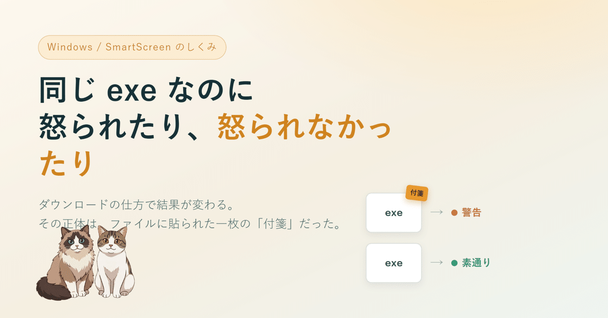

自作の小さな CLI ツールを Windows 向けに配ろうとしていて、未署名の exe を配ると SmartScreen の「Windows によって PC が保護されました」が出るのは知っていた。知らなかったのは、その先。まったく同じ exe なのに、警告が出る経路と出ない経路があった。
この「同じファイルなのに結果が違う」をほどいていったら、Windows のセキュリティに対する自分の考え方が一個ずれた、という記録です。
症状はシンプルでした。
中身は 1 バイトも違わず、ハッシュも一致する。同じビルドで出た、同じファイル。なのに、かたや「保護されました」で止められ、かたや素通り。最初に浮かんだのは「気のせいか？」でしたが、何度やっても同じ結果でした。
最初に立てた仮説は、たぶん多くの人と同じで「未署名の exe だから警告される。署名すれば消える」でした。これは半分は正しい。
でも、引っかかった。署名していないのは、どっちの経路でも同じです。同じ未署名ファイルなのだから、署名の有無で説明するなら、両方とも警告が出るか、両方とも出ないか、のどちらかのはず。
出たり出なかったりする。じゃあ SmartScreen は、署名以外の「何か」を見て判断していて、その「何か」が経路によって変わっている。ここがこの記事の背骨でした。
調べていくと、Zone.Identifier という単語に行き当たります。PowerShell で次のように打つと見えます。
Get-Item ファイル名 -Stream Zone.Identifier
ブラウザで落とした exe には、これが付いている。中を覗くと「このファイルはインターネットから来た」と書いてある。一方、パッケージマネージャで入れた同じ exe には、これが無い。コマンドはエラーになる。
ここで前に見たことのある光景と繋がりました。WSL2 で Windows 側のフォルダ（/mnt/c）を覗くと、たまに setup.exe:Zone.Identifier みたいな、コロン付きの謎ファイルが並んでいることがある。あれです。あれが、この付箋の正体だった。
これが Mark-of-the-Web（MotW）と呼ばれているものでした。腑に落ちた瞬間に、頭の中の絵がガラッと変わりました。
MotW は、exe の中身（実行されるバイト列）には入っていません。NTFS というファイルシステムが、そのファイルの「隣」にぶら下げている、隠しの付箋です。中身ではなく、来歴のメモ。「こいつはインターネットから来たやつだぞ」という。
宅配の荷物に貼られる「外部から到着・中身要確認」のシールを想像すると近いかもしれません。箱の中身が同じでも、シールが貼ってあるかどうかで、税関（SmartScreen）が止めるか素通りさせるかが変わる。中身は無実で、シールに反応している。
そして決定的だったのが、このシールは誰がいつ貼るのか、でした。貼るのはビルドした自分でも配布サーバーでもなく、ファイルを受け取った人がブラウザでダウンロードした、まさにその瞬間に、その人の PC のディスク上で初めて貼られる。ビルドの時点では、この付箋はまだ存在すらしていない。
だから経路で変わったんです。ブラウザは「外から来たもの」に律儀にこの付箋を貼る。パッケージマネージャは付箋を貼らずにファイルを置く。同じ exe でも、どう手元に来たかで、付箋の有無が決まる。
ここまで来て、自分の中の前提がいくつか入れ替わりました。書き出してみます。
最初は「同じファイルなのに、なんで」とイライラしていただけでした。でも一枚ずつめくっていくと、こわく見えていた「保護されました」の赤い画面が、ただの素直な仕組みに変わっていく。
「危険」という言葉を、ずっとファイルそのものの属性だと思い込んでいた。実際は、来歴に貼られた付箋への反応で、付箋はファイルの外にある後付けのメモだった。たったそれだけのことが、分かってみるとけっこう気持ちいい。
派手な結論はありません。ただ、こういう「腑に落ちた」を一個ずつ拾っていくのが好きなので、今日みたいな小さな引っかかりを、面倒がらずにほどいていく。それを地味に続けていこうと思います。